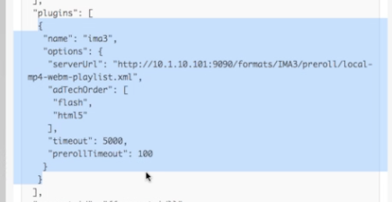
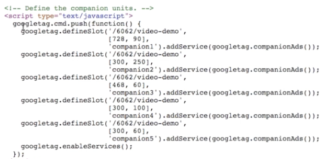

IMA-Einschränkung: 2 Versionen der IMA-Bibliothek, Flash- oder HTML-Version können nicht beides verwenden
- Standardeinstellungen für Plugin verwenden Flash, falls verfügbar (weil Flash-Anzeigen so weit verbreitet sind)
- In der Konfiguration können Optionen für das Plugin standardmäßig auf HTML (AdtechOrder) umgestellt werden
- Desktop Standard Flash, mobiler Standard-HTML-Code
Basisimplementierung von IMA Plugin
- Fügen Sie JavaScript für das Plugin
- IMA Plugin zum Spieler hinzufügen
- ServerUrl für Anzeigen-Tag bereitstellen
- Beispiel-Konfiguration

Dynamisches Ad-Targeting: Konfiguration des IMA-Plugins nach dem Sammeln von Kundeninformationen (z. B. Alter der Zuschauer, dann Anzeigenregel)
- Fügen Sie JavaScript für das Plugin
- Rufen Sie das IMA-Plugin auf und bestehen Sie an diesem
- myPlayer.ima3 ({serverUrl:...})
- Verwenden Sie die Google Publisher Tags-Bibliothek (GPT) und füllen Sie automatisch die Begleiter-Werbeblöcke
- Gutes Tutorial auf der IMA-Website
- Verwenden Sie die In-Page-Einbettungsimplementierung für Begleitanzeigen, da iframe nicht mit der übergeordneten Seite interagieren
- Beispiel: JS und HTML für Begleitwerbung
